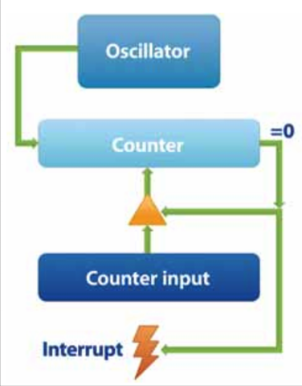

概述
由于虚拟机工作通过共享物理服务器的时间片方式工作，所以不能够精确复制物理主机的时间活动。VMware虚拟机使用了集中技术来尽可能减小和隐藏时间性能的差异，但是虚拟机和物理服务器时间的差异有时仍然会导致计时（timekeeping）不精确以及引起虚拟机中运行软件的其他问题。这篇技术文档描述如何和物理主机保持时间一致，典型的操作系统如何使用硬件来计时以及VMware提供的虚拟硬件。
计时（Timekeeping）基础
计算机操作系统通常使用以下两种方式之一来计算时间：
- Tick counting（滴答计数）
操作系统设置一个硬件设备以一个已知频率产生周期性中断，例如每秒100次中断。操作系统就能够处理这些称为滴答的中断，并计算出时间的流逝。
- Tickless timekeeping（无滴答计时）
一个硬件设备在系统启动后保持一定时间单元内的计数，并且操作系统只在需要是偶简单读取这个计数器。Tickless计时有一些优点。比如，不需要CPU频繁处理中断，并且它可以较好保持时间。然而，tickless计时只在提供合适的硬件计数器的主机上能正常工作。计数器必须运行在一个稳定的速率，能够快速读取并且永远不溢出或者溢出非常罕见，这样操作系统才能通过检测和计算溢出来可靠地扩展它的范围。
通过测量时间的流逝，操作系统就可以对绝对时间进行计时，通常称为wall-clock time。总之，当操作系统启动时，操作系统会读取初始化wall-clock time转换到从主机电池供电的实时时钟获取的最接近的秒，或者查询一个网络时间服务器来获取更精确的时间值。操作系统然后会使用其中一种方式来描述有关从这个时间点开始的时间流逝。此外，为了能够矫正长时间的时间漂移或者其他的测量错误，操作系统可能会运行一个服务来周期性从网络时间服务器校验时间并调整它的时钟和运行频率。
Tick Couting
很多PC操作系统使用tick counting来计时。但是，在虚拟机中支持这种计时是非常困难的。
虚拟机共享底层操作系统的的硬件，例如在VMware ESX，使用VMkernel。此时，一个虚拟机将产生虚拟的计时器（timmer）中断，但是它可能并不是实际运行中断。事实上，虚拟机可能并没有机会运行直到积压（backlog）了很多计时器中断。更进一步，甚至一个正在运行的虚拟机也会落后于发送的虚拟计时器中断。虚拟机只在一定的时间点才检查等待中的虚拟计时器中断，例如当底层硬件接收到一个物理计时器中断时。很多host操作系统不能为虚拟机提供明确指定时间的物理计时器中断。
由于guest操作系统是通过计算中断来计时的，当出现计时器中断积压的时候，guest操作系统测量的时间将落后于实际时间。VMware虚拟机解决这个问题的方法是通过跟踪当前计时器中断积压以及在积压增长太大时以一个较高频率发送时间中断，目的是（让虚拟机计时）赶上（物理服务器真实的）时间。事实上虚拟机计时追上真实时间是非常困难的，因为直到guest操作系统完全处理完先前堆积的虚拟机计时器中断之前都不会产生新的计时器中断。另一方面，guest操作系统可能不能察觉下一个中断作为一个独立事件并遗漏计算这个中断。这种情况称为丢失滴答（lost tick）。
如果虚拟机运行太慢，例如和物理服务器上的其他虚拟机或运行进程竞争CPU时间，则物理服务器可能不能够提供给虚拟机足够的中断来保持真实的时间。在当前的VMware产品中，如果中断积压超过60秒，虚拟机就会放弃赶上时间（gives up on catching up），而是简单地将积压的中断归零。当这种情况发生时，如果guest操作系统中安装了VMware Tools，就会激活时钟同步功能，VMware Tools通过同步guest虚拟操作系统的时间符合host物理服务器时间的方法在下一分钟纠正guest虚拟机的操作系统时间。这样虚拟机就可以继续跟踪它的计时器中断积压并追上任何新的中断积压。
另一个有关计时器中断的麻烦是它会导致伸缩性问题，也就是当同一个物理服务器上运行了越来越多的虚拟机。甚至一个虚拟机完全idle的情况下，它也必须在接收到一个计时器中断时简单运行一下（run briefly）。如果一个虚拟机每秒发出100个中断，它就会每秒在事件间隔点进入100次ready to run状态。所以粗略地说，如果有N个虚拟机在运行，中断的处理会强制后台负载每秒100xN次上下文切换，即使所有的虚拟机主机都是idle的。依次类推，虚拟机每秒1000次中断就会导致10倍的上下文切换负载。
Tickless Timekeeping(无滴答计时)
越来越多的PC操作系统采用了tickless timekeeping（无滴答计时）。这种计时方式就相当容易在虚拟机中支持并且有很多优点。但是，依然有一些挑战。
从乐观方面来说，当guest操作系统不再因为计时原因要计算时间中断，这样对虚拟机就不需要跟踪中断的积压以及如果出现大量的中断发送落后于真实时间时不需要追上时间。后来的中断可以简单地允许堆积然后再合并，不需要担心由于丢失ticks导致的时钟延误。这个节约的CPU时间就可以用于处理以后的中断。进一步，guest操作系统的时间视图就更精确，因为虚拟机的时间不会晚于真实时间，即使虚拟机没有运行或者运行缓慢。
为了实现这些优点，虚拟机必须修改guest操作系统使用tickless timekeeping。虚拟机必须在缺少对应参考的情况下默认计算滴答（tick couting）（The virtual machine must default to tick counting in the absence of knowledge to the contrary），因为如果guest操作系统自己来计算计时器中断，它就会在错误时放弃。
VMware产品使用了多种方法来检测tickless timekeeping。首先，如果guest操作系统没有任何虚拟计时器设备来产生周期性的中断，就可以非常安全地判断虚拟机操作系统不使用滴答计数（tick counting）。然而，一些操作系统使用一个或多个计时器设备来生成周期性中断，即使它使用的是无滴答计时。这种情况下，可以从操作系统类型来推断是否使用无滴答计时。另一种方法是，虚拟机的软件可以产生一个hypercall来通知虚拟机它使用无滴答计时。
两种不同形式的计时方式带来的一个难题是虚拟机偶尔会运行在很高的时间敏感代码，例如，测量在一个给定真实时间内能够运行的特定循环的数量。这种情况下，代码最好运行在tick counting类型的计时环境下，此时当虚拟机不运行时guest操作系统的计时就会降速或者停止。
初始化和矫正wall-clock时间
guest操作系统面对的相同的基本难题是保持精确的wall-clock时间，不管运行在虚拟机还是物理服务器上。当操作系统启动时初始化时钟的正确时间，并随着时间流逝精确更新时钟。
对于初始化时钟，VMware虚拟机提供了一个机制模拟物理主机：一个虚拟的电池供电CMOS时钟并且虚拟网卡可以用于从网络时间服务器获取时间。此外还有一个附加的机制：VMware Tools在虚拟机操作系统启动时候会重置guest操作系统时钟来保持和物理主机时钟一致。这个guest和host之间的接口使用UTC（协调世界时，Coordinated Universal Time，也称为格林威治时间或GMT），这样就不会要求guest和host必须在相同的时区。
虚拟机还有另外一个问题：当虚拟机从挂起状态（suspend）恢复是，或者从快照恢复时，guest操作系统的wall-clock时间依然是挂起或者快照创建时的时间，必须得到更新。VMware Tools处理这个问题的方法，依然是设置这个虚拟机的时钟和恢复运行所在的物理主机时钟一致。然而，有些用户有时需要虚拟机有自己的时钟来设置虚假的和物理主机无关时钟。VMware Tools可以选择不更改虚拟机的时钟。
长时间精确更新时钟是一个难题，因为物理主机的计时器设备会逐步漂移，通常和温度有关的频率变化会导致每百万次计时有100次的快或慢。虚拟机计时器设备也会有底层主机相同的时间漂移，并且增加的漂移和不精确会导致四舍五入错误和丢失ticks。在物理服务器，通常需要运行网络时间同步软件，如NTP或者Windows Time Service来保持长时间的时间精确。同样在虚拟机也需要这样，也可以使用相同的时钟同步软件，虽然有时候必须特别配置以解决虚拟计时器设备波动。VMware Tools可选地通过周期性和物理主机时钟同步的方法来矫正虚拟机长时间时钟漂移和错误，但可能不太精确。
PC计时器硬件
由于历史原因，PC使用了几种不同的设备来跟踪时间。不同的guest操作系统根据可用设备和如何使用设备会采用不同的据定。结合使用不同的计时器设备对于很多操作系统非常重要。有时一个运行在已知速度的设备会用来测量其他设备的速度。有时一个细粒度的计时设备用于提高从更粗颗粒度计时设备获取的滴答计数的精度。在虚拟机中需要支持所有这些设备，并且从不同设备曲度的时间必须和其他计时器已知，即使这些计时器和真实时间不一致。
所有的PC计时器设备可以使用以下示意图描述。虽然不是所有的设备都有所有的功能，有些有附加的功能。

振荡器(oscillator)为计时器设备提供一个固定的输入频率，这个频率可能是特定的，或者操作系统在启动时可以度量这个频率。计数器（couter）可能通过软件被读取或写入。计数器为每个振荡器的循环递减一个单元，当计数器到达0的时候，它就产生一个输出信号，也就是处理器中断。此时，如果计时器被设置为one-shot模式（一次性模式），计时器就会停止。如果计时器设置为周期性模式，计时器就会继续技术。这里可能还有以个计数器输入寄存器，这个寄存器的值在计数器到达0的时候被加载到计数器；这个计数器允许软件来控制时间周期。一些真实的计时器设备递增而不是递减并且有一个寄存器的值和计数器对比，当中断产生并重启计数器归零。不过计时器设计成递增和递减都提供了相同的功能。
常用的PC计时器设备包括：可编程间隔计时器（programmable interval timer, PIT），CMOS实时时钟（CMOS real time clock, RTC），本地高级可编程中断控制器（local advanced programmable interrupt controller, APIC）计时器，高级可配置和电源接口（advanced configuration and power interface, ACPI）计时器，时间戳计数器（time stamp counter, TSC），以及高精度事件计时器（high precision event timer, HPET）。
PIT
PIT是最古老的PC计时器设备。它使用一个晶体控制的1.193182MHz输入振荡器以及具有16为计数器和计数器输入寄存器。这个振荡器的频率不能根据方便地计时进行调整。
CMOS RTC
CMOS RTC是电池供电的内存设备，用于在PC关机的时候保持PC的BIOS设置稳定。CMOS这个名字是从这个设备执照的低电压集成电路技术而来。有两种主要的时间相关功能。首先，有一个持续运行的时钟来保证year/month/day hour:minute:second格式，这个时钟只可以被解读为最接近的秒。还有一个计时器可以在主频2Hz到8192Hz之间任意频率间产生周期性中断。这个计时器就符合前述的"计时器示意图"，并且计数器不能读写，以及计数器只能设置为两个电源之一。
Local APIC Timer
本地高级可编程中断控制器（Local APIC）是现代计算机的中断路由逻辑的部分。在多处理器系统，每个个处理器都有一个本地APIC。在当前处理器，本地APIC被集成到处理器芯片中。本地APIC包括一个具有32位计数器和计数器输入寄存器的计时器设备。这个输入频率通常是处理器基础前端内存总线频率（先于两倍或四倍的DDR或四路内存的乘积？）。APIC计时器比PIT和CMOS计时器有更好的细粒度和更宽广的计数器，但是软件没有可靠的方法来检测APIC的频率。通常，唯一检测local APIC计时器频率的方法是使用PIT或CMOS计时器来计算，虽然只能有一个近似值。
ACPI Timer
ACPI计时器是ACPI规范的一部分所附加的系统计时器。ACPI计时器也称为电源管理（power management, PM）计时器。ACPI计时器有一个24位的计数器并且频率增加到3.579545MHz(是PIT主频的3倍)。ACPI计时器是可编程的以便在它的高位更改数值时产生一个中断。ACPI计时器没有计数器输入寄存器，这个计数器始终反转（rolls over）（即，当计数器达到24位数值的最大值时，它就会归零，并重新开始计数）。这个ACPI计时器持续运行在一些节能模式，而这种环境其他技术去会停止或缓慢下来。这个ACPI计时器相对读取速度缓慢（典型是1~2μs）。
TSC
TSC是Pentium CPU以及更新的处理器所使用的64位循环计数器。TSC借用（runs off?）CPU时钟振荡器，在当前大多数系统通常是2GHz。按照当前的处理器速度，TSC需要数年才会反转一次。TSC不能产生中断并且没有计数器输入寄存器。TSC可以通过软件在一个指令（rdtsc）中完成读。这个rdtsc指令通常在用户模式提供，但是操作系统也可以选择不提供这个指令。TSC是具有非常好的细粒度，广泛性以及大多数便捷的计时器设备访问。然而，TSC也有一些缺点：
- 和local APIC计时器相比，软件并没有一个可靠的方式来检测TSC输入频率。总之，唯一可以检测TSC频率的方法是使用PIT或CMOS计时器来近似测量。
- 一些电源管理技术会动态更改处理器时钟频率并且微小或不可察觉地改变TSC的输入晶振频率。另外，AMD Opteron K8处理会在激活了挂起时钟升降功能（halt clock ramping feature is enabled）情况下，在TSC进入和离开挂起状态时会丢失一些循环。不过，最新的Intel和AMD处理器已经没有这个限制。
- 一些处理器在低电压挂起状态（ACPI C3状态或更低状态）将停止TSC
- 在共享总线的SMP主机，所有的TSC使用（run off）一个公共的时钟晶振，所以它们可以在启动时候同步彼此时钟并作为一个单一的系统范围时钟。这个功能不能在IBM x系列NUMA主机和派生系统上实现。然而，在这些主机上，不同的NUMA节点使用独立的时钟晶振。虽然每个NUMA节点的晶振使用相同的名义主频，但是每个振荡器都是有一个独立的晶振各自和名义主频有漂移偏差。另外，时钟频率动态从一个小范围（百分之二或类似）减少发散无线频率噪声，这个技术称为覆盖-光谱时钟，这个变化不会在不同节点移动。（汗！！！非计算机科班翻译太挫了）
尽管TSC有上述这些缺点，操作系统和应用程序通常都使用TSC作为计时。
HPET
HPET是一些较新的PC提供的设备。很多PC系统并没有这个设备，并且操作系统通常不需要它，虽然如果HPET存在的话也会使用。HPET是一个中心化上升计数器，除非通过软件停止否则它会持续运行。HPET可以是32位或者64位。这个计数器的周期可以从一个寄存器中读取。HPET提供多种计时器，每个都有一个超时寄存器用于和中心寄存器对比。当一个超时值符合，这个相应的计时器就被剔除。如果计时器被设置成周期性，HPET硬件自动添加它的周期到一个比较寄存器，因此计算这个计时器的下一个时间来决定是否剔除。
HPET有少量缺点。这个规范不要求计时器是专用的良好的细粒度，以便具有较低的漂移，或者能够快速读取。一些典型的实现运行计数器在18MHz并要求和ACPI计时器相似的时间（1–2μs）来读取HPET。这个通用涉及的缺点是以这个计数器自身来设置超时速度。如果软件试图设置一个短的超时时间，但是由于一些原因它写入JPET延迟超过了这个超时设置，就会失效。软件可以停止中心计数器，的那是这样在长时间计时情况下做会摧毁HPET的可用性。
HPET被设计成可以通过驱动PIT和CMOS计时器通常连接的中断总线来取代PIT和CMOS的周期性计时器。不过大多数硬件平台仍然具有物理PIT和CMOS计时器，并且不需要使用HPET来替代。